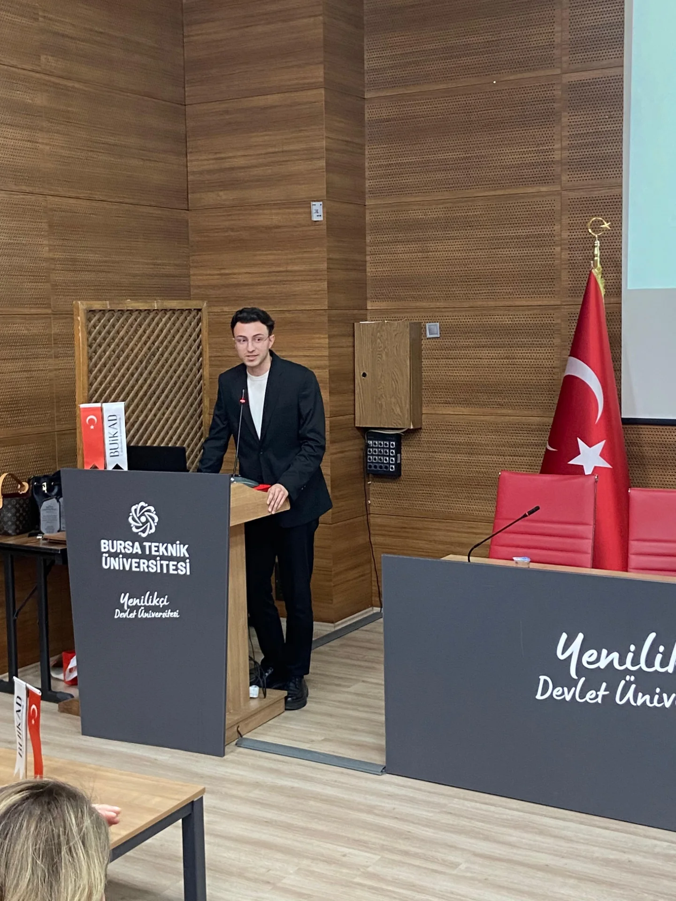
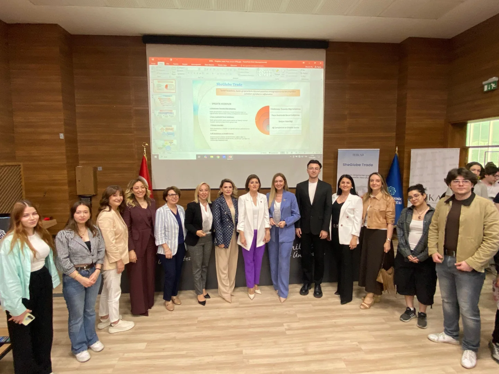

Bursa Teknik Üniversitesi Uluslararası Ticaret Topluluğu (BTÜ UTAT) ile Bursa İş Kadınları Derneği (BUİKAD) iş birliğinde düzenlenen “Kadın Girişimciler İçin Finansal Hazırlık, Deneyim ve Kariyer Stratejileri” paneli, Bursa Teknik Üniversitesi ev sahipliğinde yoğun bir katılımla gerçekleştirildi. Sektöre ve geleceğin iş dünyası liderlerine güçlü bir yön çizen panelde, kadın girişimciliği ve finansal yönetim süreçleri detaylıca ele alındı.
Protokol ve Açılış Konuşmaları
Etkinliğin açılış bölümü; Dekanımız Prof. Dr. Hilal YILDIRIR KESER, BUİKAD Başkanı Şeyda ŞENÇAYIR ve Topluluk Kurucu Başkanımız Melih AYDOĞAN’ın konuşmalarıyla başladı.

Açılış konuşmalarında akademik birikim ile saha tecrübesinin bir araya gelmesinin önemine vurgu yapılırken, gençlerin dış ticaret ve girişimcilik ekosistemindeki rolünün altı çizildi.
SheGlobe Trade Projesi ve Dış Ticaretin Şifreleri
Etkinlik kapsamında öne çıkan SheGlobe Trade projesi detaylandırılarak, dış ticaret alanında kadın girişimcilerin önündeki fırsatlar, finansal yol haritaları ve sektörel stratejiler alanında uzman isimler tarafından katılımcılara aktarıldı. Panelistler ve komisyon üyeleri tecrübelerini paylaşarak öğrencilere yön gösteren kritik değerlendirmelerde bulundular.
İlham dolu sunumların ve interaktif soru-cevap bölümünün ardından, katkılarından dolayı değerli panelistlere ve komisyon üyelerine teşekkür edildi. Etkinlik, katılımcıların ve protokolün bir araya geldiği toplu fotoğraf çekimi ile sona erdi.

BTÜ Uluslararası Ticaret Topluluğu olarak; kıymetli tecrübelerini bizlerle paylaşan panelistlerimize, SheGlobe Trade projesinin detaylarını aktaran komisyon üyelerine ve etkinliğimize yoğun ilgi gösteren tüm öğrenci arkadaşlarımıza teşekkür ederiz.